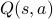

Research ProjectsCurrent ProjectsEfficient Exploration using Ensemble of Value FunctionsGuide : Prof. Balaraman Ravindran This is one of my most recent endeavours in Deep Reinforcement Learning.The idea was to switch between multiple estimates of the value function for both behaviour and learning. The behaviour policy would always be greedy for the sampled value function estimate. The cool thing is that adequate exploration can be ensured by the differences between the different estimates. It worked very well on quite a few RL problems. We were about to submit a paper to a workshop as well, when we found that Bootstrapped DQN, published a couple of months earlier, was essentially the same idea and had already been tested on much harder problems than what we had considered. We are currently developing variations of the Bootstrap architecture to resolve some other issues in RL. Report can be found here Past ProjectsInput Conditioned Language Models using Long Short Term Memory NetworksGuide : Prof. Sutanu Chakraborti Our objective in this project is to find NN architectures that are capable of learning surface realisation, sentence planning and content determination end-to-end from raw data (images, parameters etc..) to complete paragraphs at once. LSTMs naturally seemed the best choice. We came up with a hybrid LSTM design that learnt an input-conditional language where the raw inputs are passed through another network before being fed to the LSTM. This project contains 5 variants of LSTM designs that we tried out:
Report can be found here Language Expansion in Text-based GamesGuide : Prof. Balaraman Ravindran This project basically tries to apply Policy Distillation to text-based games. The idea was to explore the representations learnt by the distilled agent for the different vocabulary amongst the text-based games. A Deep Reinforcement Learning Approach to Influence MaximisationGuide : Prof. Balaraman Ravindran We proposed an algorithm wherein we learn an optimal policy to influence the nodes as we observe the diffusion process in the graph. The objective was to minimise the number of time steps taken to influence the graph and minimise the number of nodes that we influence artificially using a deep learning architecture. The states for the problem were defined using a one-hot encoding and the possible set of actions, possible from a certain node, were also provided to the agent using the adjacency matrix. The two encodings were passed through autoencoders to provide low-dimensional representations and concatenated. The concatenated expression was then passed a neural network function approximator to provide the  values. Semi-Supervised Clustering for organizing Large Image/Video DatasetsGuide : Prof. Sukhendu Das] This project dealt with image set classification using semi-supervised hierarchical clustering(SHC).The SHC is a recursive algorithm, loosely based on the normalised N-cut method which uses the second smallest eigenvector of normalised Laplacian matrix to divide the dataset. The semi-supervision implemented is just a stopping criterion for the division of clusters. Github Account |